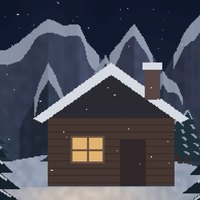
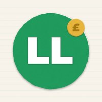
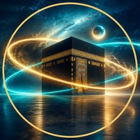

UK online safety
The Digital S
Scams change every week. Scout shows you the trap, then the one check that spots it. Pause. Check. Then click.
Shop: Printable scam-check cards for parents (£3.50)
Shop: Black Friday & Christmas scam checklist, printable (£2)

Cosy pixel worlds
Shaed Ambience
One-hour rooms of rain, snow and night sounds for study, sleep and calm. Every scene is drawn in code, and every sound is made here.
Shop: Pomodoro study planner, 50/10 (£2.50)
Shop: Clockkeeper Digital Planner 2027, hyperlinked iPad planner (£9)

Halal money, explained
Ledger Lines
Halal money, explained plainly for young Muslims in the UK: saving without riba, zakat, and how Sharia screening works. Education only, not advice or a fatwa. On Instagram we're Hishab.
History, drawn
Shaed History
History, drawn and explained, with the sources named and the "why" behind what happened.
opening soon, two episodes already drawn

Qur'an · surah explainers
FAEED
The Qur'an, surah by surah, in English, Arabic and Urdu, with the sources on screen.
FAEED is its own brand with its own rules: no faces, no music, and every point traced to a source.